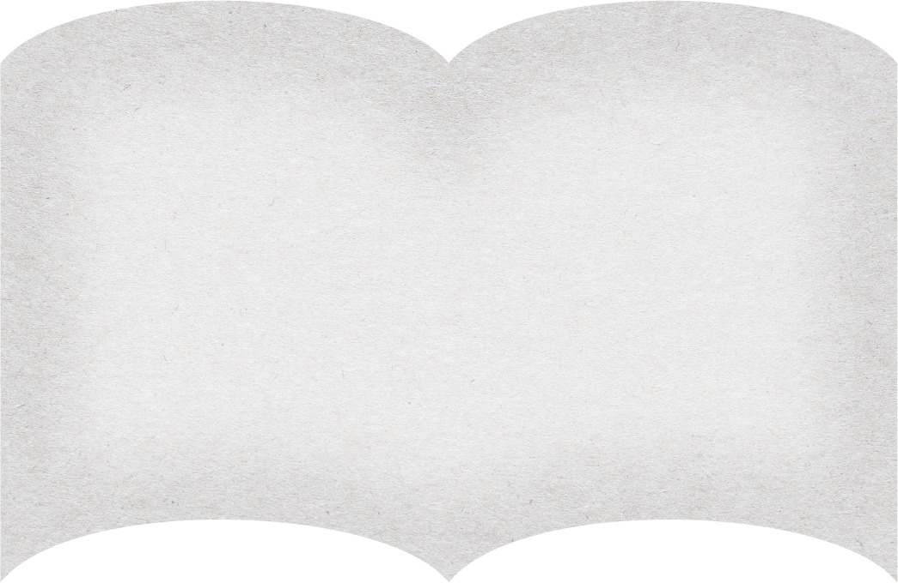
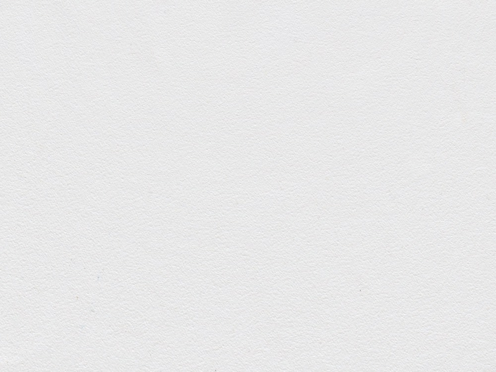
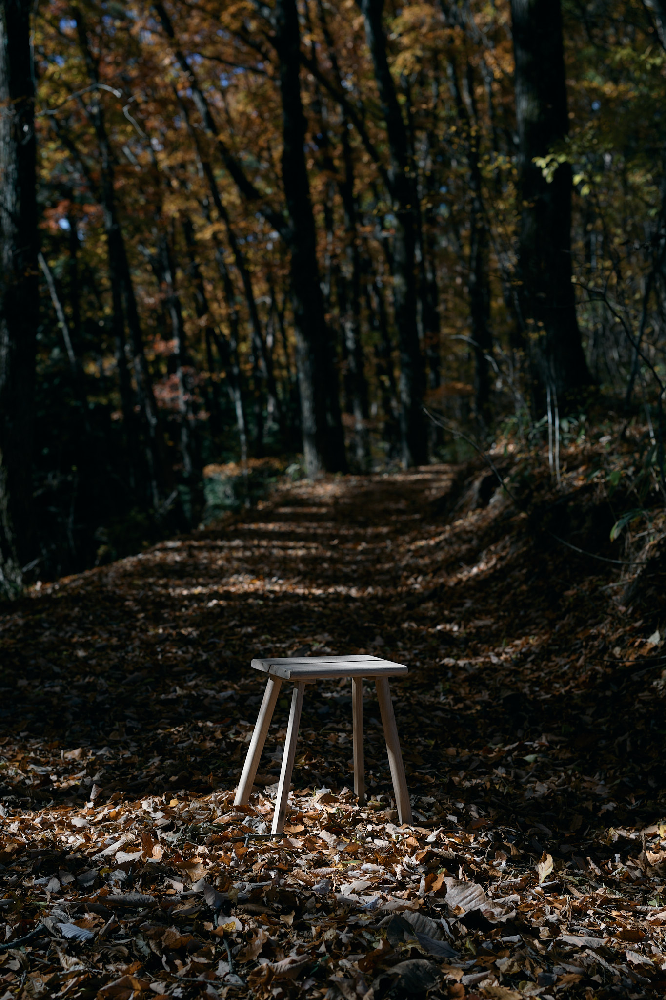
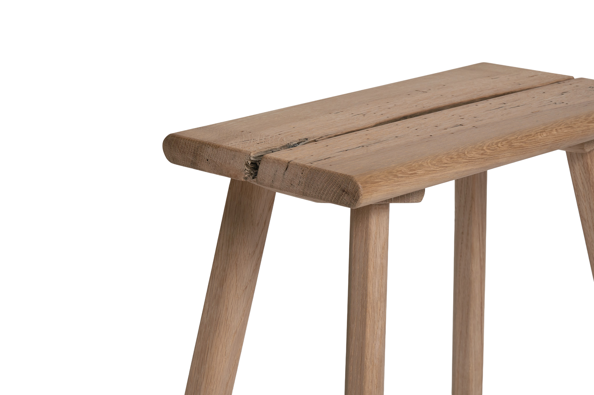
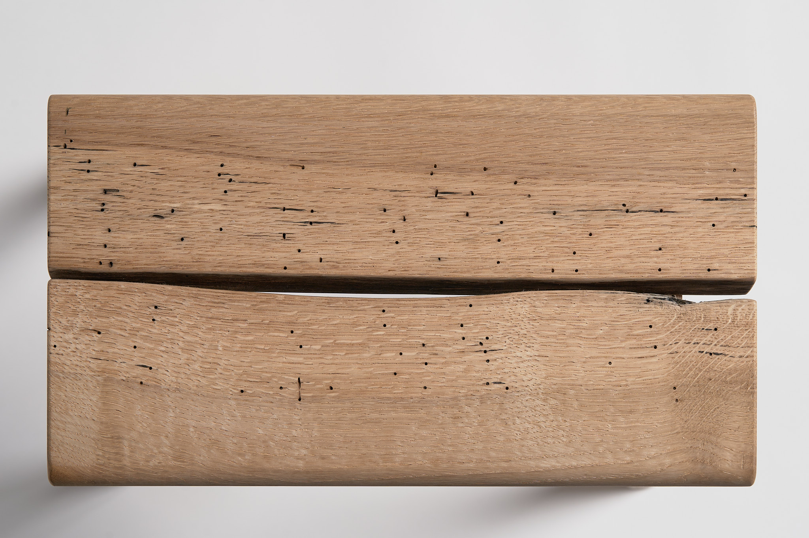
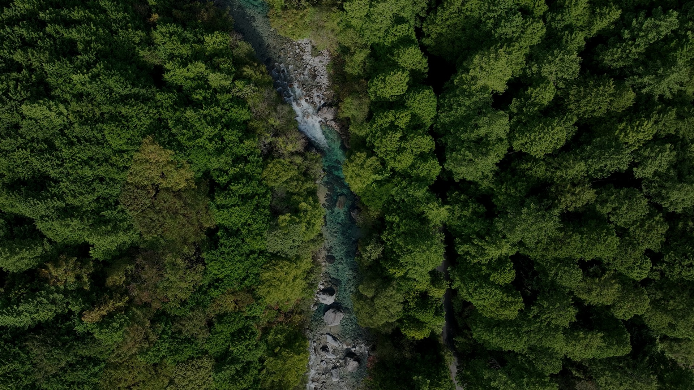

制作ストーリー



制作ストーリー


この椅子が生まれたのは、信州・伊那谷、木曽谷。
偉大な山々に囲まれ、谷を刻む川が走り、深い森が広がる土地。
降る雨は、天より授かる神仏の恵み。
天水は滝となり、川となり、大地を削りながら下界へと流れていく。
葉をつたい、根に集まり、木を養う。
川の流れは止まることがない。
その理は川だけではなく、この世のすべてに共通する。
木が芽生え、天に向かって伸び、いずれ朽ち、
やがて土へと還るように、私たちもまた、
生まれ、働き、祈り、やがて大いなる流れへと還っていく。
この土地に生きる人々は、その流れの実感の中で、
山に手を合わせ、木を暮らしの中に息づかせてきた。
River stoolは、大いなる山の時間と、
止まることのない川の流れをかたちにしたものである。
サイズ：W395×D270×H420mm
重さ：約2kg
材質：天然木（信州産コナラ）

2枚の木を組み合わせ、山あいの谷と、
そこを流れる川の姿を表しました。
天板には虫食いの跡をそのまま残し、
木の中で生きていた命の痕跡を見ることができます。
自然が育んだ土地の風景が、道具となった姿です。
釘や接着剤は使わず、
吸い付き桟と呼ばれる伝統的な技法で
天板と脚をつないでいます。
水を使って木を膨らませ、固定する。
自然の働きをそのまま生かした技術です。
Step 1｜板と桟を加工
座面(ホゾ穴側)はまだ水分を多く含んだ状態（グリーンウッドに近い状態）のまま使い、脚(ホゾ側)だけを別に極端に乾燥させておく

Step 1｜板と桟を加工
座面(ホゾ穴側)はまだ水分を多く含んだ状態（グリーンウッドに近い状態）のまま使い、脚(ホゾ側)だけを別に極端に乾燥させておく
Step 1｜板と桟を加工
座面(ホゾ穴側)はまだ水分を多く含んだ状態（グリーンウッドに近い状態）のまま使い、脚(ホゾ側)だけを別に極端に乾燥させておく
Step 1｜板と桟を加工
座面(ホゾ穴側)はまだ水分を多く含んだ状態（グリーンウッドに近い状態）のまま使い、脚(ホゾ側)だけを別に極端に乾燥させておく
Step 1｜板と桟を加工
座面(ホゾ穴側)はまだ水分を多く含んだ状態（グリーンウッドに近い状態）のまま使い、脚(ホゾ側)だけを別に極端に乾燥させておく
Step 1｜板と桟を加工
座面(ホゾ穴側)はまだ水分を多く含んだ状態（グリーンウッドに近い状態）のまま使い、脚(ホゾ側)だけを別に極端に乾燥させておく




